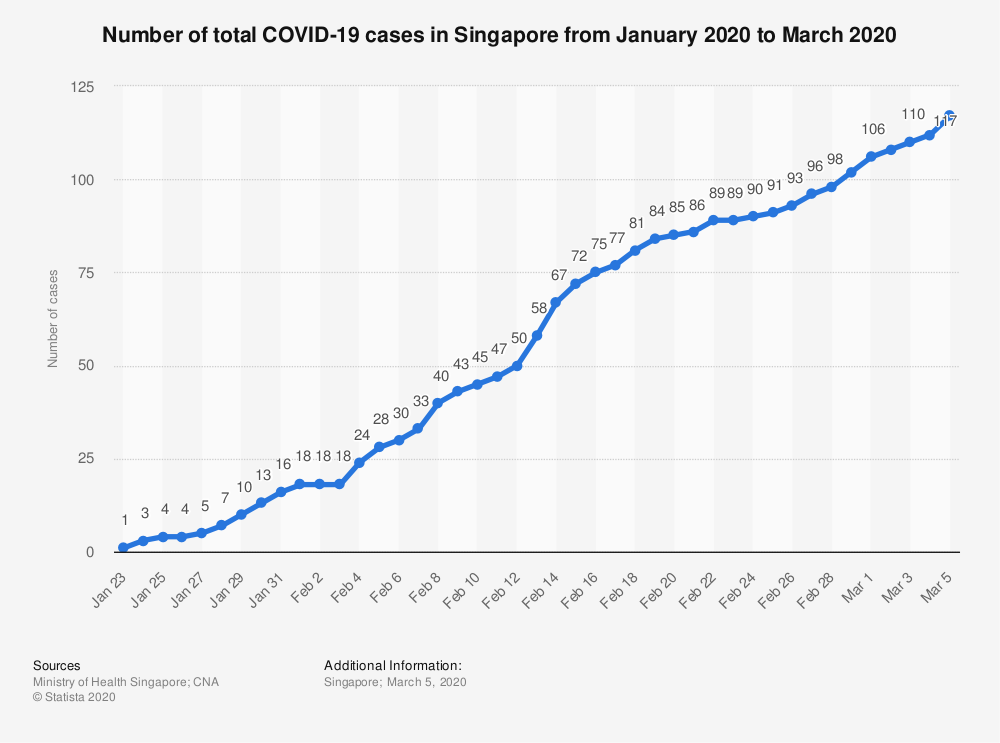

If you just wanna see the COVID graph, plz go ahead.
Hey! Hope you’re doing well, especially my friends in Ottawa who have no choice but to still work or those who have to make frequent trips to grocery stores. Is everyone staying still sane after being inside too much? Luckily for me, I have been living with my parents for about 2-3 weeks now, thanks to them driving up to Ottawa to pick me up. When the virus wasn’t that bad, I dreaded the idea of moving back home, but now, I am really thankful to find myself home. Anyway, I’ve been staying inside for the most part, other than occasional 5 minute walks around the neighbourhood. I’m slowly starting to lose track of what day of the week it is lol. :sweat_smile: Everyday feels the same. And I’m starting to feel like a hamster on a wheel.
Salut! J’espère que vous allez bien, surtout mon amis d’Ottawa, qui n’ont pas d’autre choix que de continuer à travailler ou qui doivent vont souvent au supermarché. Est-ce que tout le monde reste sain d’esprit après avoir été trop à l’intérieur? Heureusement pour moi, J’ai été rester chez mon parents il y a 2-3 semaines, grâce à eux qui ont conduit jusqu’à Ottawa. Honnêtement, quand le virus n’etait pas mal, je redoutai l’ideé de retourner, mais maintenant, je suis très reconnaissant de me retrouver ici. Alors, J’ai été rester l’intérieur pour la plupart, autre que bref marches dans le quartier. J’ai commencé perdu lentement la notion du temps. Tous les jours, c’est même, et je sens comme un hamster dans une roue.
This post is going to be a little different from my previous ones. Firstly, I kinda want to write a quick little diary, cuz you know, we all gotta express ourselves sometimes lol. And also I’m going to translate everything in French. Why? I’m going to write about it a little later, but basically, I suck at translating my own thoughts in French, and I wanna get better. I’m currently writing this English part (Tuesday 11pm), and gonna go to bed, and work on translating it after work tomorrow. So it won’t be until like 11pm tomorrow for this post to be up on internet.
Ce poste va un peu différent de les précédent. D’abord, je veux ecriter un journal, parce que je veux exprimer mon pensée aprés n’avoir pas parler à quelqu’un en dehors de ma famille. Également, je vais traduit tout en français. Pourquoi? Bref, j’ai un probleme à parler quelque choses je veux dire en Français, mais je veux aller mieux. Au moment de rédiger ces lignes en français (sept heures et demie mercredi), Je repends là où j’ai laissé d’hier soir. Avec un peu de chance, je finirai de minuit.
Anyways, work’s been good. While I loved my 20 minutes walk on Laurier Avenue to the office, breathing in fresh air, being able to wake up, grab a coffee and start working all within 5 minutes, more than makes up for it. I’ve been getting into good routines to keep myself busy. I’d probably go insane if I just sat on my ass and did nothing. They say if you can’t avoid it, you gotta enjoy it, amirite? lol.
Alors, le travail a été bien. Bien que j’aime la promenade à mon bureau dans avenue Laurier, avec l’air frais, je ne peut pas me plains du pouvoir réveiller, chercher le café, et commercer à travailler, tout dans cinq minutes. Également, j’ai été établir les bonne habitudes à m’occuper. J’irais fou probablement si je reste assis à ne rien faire.
After work, I usually do a quick bodyweight workout, and a little bit of stretching. If I didn’t do that, I’d be literally doing nothing physically active, and I really don’t like the idea of coming out of this quarantine a fat fuck. Me mum has been feeding me good food, so I really gotta be careful not to let myself get out of shape lol. Speaking of which, having someone else cook for you really frees up your day. It’s one of the things I’ve come to really appreciate in the past few weeks. Now have more time for fun stuff like gaming, and playing guitar, which I haven’t touched in quite some time! Then, after dinner, I have about 6 hours of free time until midnight or 1am when I go to bed. It’s a lot of time, but I find that it still goes really quickly, guessing that part hasn’t changed much since the quarantine for most people.
Aprés finir travail, généralement, je fais de musculation au poids de corps pour 15-20 minutes et un peu élongation. Si je n’ai fait pas ça, je serais rien actif faire. Et je vraiment n’aime pas l’idée de devenir gras à la fin de quarantine. Complémentairement, ma maman a cuisiné des bon repas, donc, je dois faire attention à ne pas trop manger. Parlant de cela, c’est très sympa d’avoir quelcu’un cuisiner pour moi, parce que ce libère du temps. C’est une de choses que j’en suis venue à apprécier. Par conséquent, j’ai plus de temps pour activités amusante comme la console de jeu ou jeu de guitare. Ensuite, aprés le dîner, j’ai environ six heures, jusqu’à midnuit, quand je vais me coucher.
I’ve been reading a good amount. Last week, I finished this stock trading book that my friend gave me a long time ago.
J’ai beaucoup lu. La semaine dernière, j’ai fini un livre de finances que m’a été donné par mon ami il y a longtemps.
This book talked about short-term trading. It was interesting enough, but hasn’t changed my preference to long-term investing.
Ce livre parle d’affaires boursières courte-terme. C’etait avez intéressante, mais n’avait pas de changer mon préférence pour l’investissement long-terme.
And over the weekend, my brother gave me this book, that I’m sure some of you have already read, “The Power of Habit”. I’m only 20 pages in to the book, but so far, it’s been pretty interesting. In the book, this old man had a brain injury and can’t tell you where his bathroom is in his house, but goes out for a walk and comes back safely out of habit. We’ll see where this book goes.
Et au cours de weekend, mon frère m’a donné un livre. Peut-être certains d’entre vous avez lu. C’est appelé “The Power of Habit”. J’ai lu seulement vingt pages, mais jusqu’à présent, ça a avez intéressant. Dans le livre, un homme vieux éprouve un lésion cérébrale. Par conséquent, il ne peut pas de se rappeler là où est son salle de bain. Cependant, étrangement, il marché dans le quartier chaque jour, et retourné chez lui sans probléme, par l’habitude. Je suis intéressé de voir comment le récit se déroule
So I’m trying to learn French again! In the past, I had bursts of interests in French, but never fully dedicated myself to it. (You know the drill, Duolingo and Coffee Break French podcast) Now, I have no excuse. I’ve got all the time in the world and I want to take this French thing seriously. Close to everyday, I try to do some sort of French learning. One of my favourites is this podcast “InnerFrench”, because there’s a script that I can reference while listening. But when I don’t feel like listening to the same guy everyday, I read news articles on france24.com/fr or lapresse.ca. I prefer having audio that syncs up exactly with the text, so I don’t get confused, which is the reason I avoid watching Netflix, because their script is all over the place. Nonetheless, if anyone has any good resources, I’d love to check them out!
Donc, j’apprend encore la français! Dans le passé, j’ai eu élans de intérêts en apprendre la français, mais, je n’ai me jamais pas consacré complètement. Maintenant, il est inexcusable de ne pas apprendre, parce que j’ai tout le temps dont j’ai besoin. Je veux untilise ce opporunité pour prendre au sérieux mon apprentissage. Le podcast ‘InnerFrench’, c’est parmi les manières mon préféré apprendre, parce qu’il y a des script que me permettre le faire référence alors que écouter l’audio. Cela dit, quand je ne veux pas écoute à le même personne (Hugo), je tourne vers l’autre moyens de français, comme la ‘france24.com/fr’ ou ‘lapresse.ca’ pour rattraper les actualités. Je préfère avoir de l’audio dont s’aligne sur les scripts à 100%. C’est parce que sinon, je me souvent perds alors que suivre les scripts et l’audio est un peu différent. À ce titre, j’évite religieusement Netflix. Ils ont beaucoups des films, mais, je n’ai pas encore trouvé un film avec la description comme expliqué. Néanmoins, si vouz avez une recommandation, j’aimerais beaucoup regarder! :)
I’ve also been lucky to have some friends who are helping me on this journey. Marc, Connor, Patrick and I have been facetiming once or twice a week to have conversations in French. We find an article/podcast/movie and just talk about it for half an hour. We have varying levels of understanding of the language, but it’s been really helpful for me to challenge myself to have conversations. I find that to be the most difficult part. I’m OK at reading French, because I can get a lot of practice on my own, but formulating a sentence is very challenging to me. My problem is that I over-think about conjugations and end up losing my trains of thoughts. Maybe I need to live with a French roomate and force myself to only speak in French.
Également, J’ai chanceux avoir des amis m’aider sur le voyage apprendre une langue étranger. Marc, Connor, Patrick et moi avons ‘facetime’ un ou deux fois par semaine pour chatter en Français. Nous trouvons une article/podcast/film et les parlons pour environ une demi-heure. Il y a des niveaux divers en français parmi nous, mais c’est très bénéfique pour moi de me mettre au défi de former un phrase en français. Mon plus grand probléme est que je me attarde sur la conjugaison, et finis perdre mon train du penseé. Bien sur, je progresserai avec plus pratique. Peut-être j’ai besoin d’un roommate français, et me force parler la français.
On a side note, it’s absolutely thrilling when you half-guess what a sentence is about, and end up being correct. Overall, challenging myself to learn French has been nothing but a postive experience. Now, enough with myself, let’s understand what the exponential growth is. (currently midnight, this took me an hour lmao)
Du côté positif, c’est exaltant absolument quand je devine quel une phrase veut dire, et finis être correct. En général, me mettre au défi de apprendre la français n’a été autre qu’une experience positif. Mainteant, je vais vous enseigner la croissance exponentielle. (Il est maintenant dix heures vingt. Ça veut dire que traduire jusqu’à présent m’a pris trois heures, fuck lol)
We hear it all the time. The whole reason why we’re practicing social distancing and millions of people are out of their job, is because of this concept “exponential growth” of the spread of the virus. When something is exponential, that means it is being multiplied by the same number over and over again. In our case right now, of course, is the number of new COVID-19 cases. That number globally is currently about 130%, meaning tomorrow, there will be 130 more new infections if there was 100 today. This may not seem like much, but in about 10 days, that grows to about 1,400!
Nous entendons parler tous les jours. La raison précise que nous pratiquons la distanciation sociale et des millions de personnnes sont licencié, c’est le concept de la croissance exponentielle de propagation des virus. Quand quelque chose croît exponentiellement, ça veut dire qu’il est multiplié encore et encore par le même numero. Dans notre situation, bien sûr, c’est le numéro des nouveaux cas de COVID-19s. Le multiplicateur que nous parlons, c’est 130%, dont signifie que il y aura 130 nouveaux cas demain, si il y avait 100 nouveaux cas adjour’hui. Cela peut ne pas sembler un grand nombre, mais en 10 jours, ça devient 1,400!
This rate of growth was just too much for me to understand until I watched this video, which inspired this post. The problem with exponential growth, is that everything happens so quickly, it’s often difficult to make meaningful insight. For example, 2-3 weeks ago, the US had about 4,000 infections. That number currently sits at about 400,000 infections. This means, that in less than a month, the number of COVID-19 cases increased a 100 fold! After a while, you kinda become dull to the new numbers coming in. I often catch myself going “Oh Christ, there’s 1,000 more infections today, that’s a lot! But wait, is it really that many? I feel like I heard that number yesterday.”
Ce taux de croissance était trop vague pour me comprendre jusqu’à regarder ce video, dont inpirer ce poste. Le probléme avec la croissance exponentielle, c’est que il développe trop rapidement, et c’est souvent difficile pour prendre les aperçus significatives. Par exemple, il y a 2-3 semaines, les États-Unis ont confirmé 4,000 cas de infection. Maintenant, ils a 400,000 cas. Ça veut dire, que en moins d’un mois, le nombre a augmenté par 100 fois! Après un certain temps, les dernier rapports deviennent insignifiant, parce que vous voyez ces nombres tous les jours. Moi, je me souvent trouvé penser “wow, il y a 1,000 plus de infections adjourd’hui, c’est beaucoup! Mais est-ce-que c’est vraiment grand? je pense que j’ai entendu ce nombre hier”
“Are we doing good or bad?” is the essential question that everyone wants to know. Wouldn’t it be nice to know that right away, as you’re watching the news?
“Faisons-nous du bien ou du mal?” - c’est ae question essentiel laquelle tout le monde veut connaître. Est-ce-que ne serait-il pas souhaitable de le savoir immédiatement, que vous regardez les actualités?
Well there is a way! By using logarithmic scales to plot total number of cases vs new cases, we can see the rate of changes fairly easily. :upside_down_face: Stay with me here folks. Give me a chance to explain this.
Eh bien, il y a un moin! Par utiliser les échelles logarithmiques pour tracer le nombre total de infections vs le nombre de nouveaux cas, nous pouvons voir facilement le taux de variation. Perdez pas votre concentration! Donnez-moi un chance pour le expliquer.
A common graph you might have seen would look like this:
Un graphique général que peut-être vous déjà avez voir semble comme ça

This graph plots the total number of confirmed cases against time. It’s fine and dandy, but there’s two problems I’d like to point out.
Instead, here’s a graph I made. (Double click on the legend to isolate!)
Ce graphique trace lenombre total de infections contre le temps. C’est ok, mais je voudrais montrer deux probléme avec ça. 1. C’est impossible pour comparer Singapore and USA sur le même graphique, parce que la simple différence de population entre deux pays. Singapore semblerais insignifiant. 2. La maladie se fiche du temps. Elle traquera les personnes vulnérables s’il fait chaud ou froid. (Donc, le temps ne communique pas beaucoup d’information en tant que x-axe). Plutôt, c’est un graphique j’ai fait.
This graph has two fundamental differences from a regular graph.
Ce graphique a deux différences fondamentales par rapport à un graphique standard. 1. Les axes sont sur les échelles logarithmiques, ce qui signifie que chaque tick mark representé une augmentation de 10 fois. -> Effectivement, les petits nombres paraît plus grand et les grands nombres paraît plus petits. Ce permet nous comparons pays avec différents tailles. 2. Les axes compare le nombre total de infections contre le nombre de nouveaux cas, dont permet nous voyons le taux de croissance, plutôt que le changement absolument.
Please excuse me for not including China in here, data was a bitch to clean up, and didn’t feel like spending to much time on it. Also I only plotted some major countries of interest. Finally, I took weekly averages, rather than daily data, it would have been too much noise. This data is not perfect, but should give you a decent idea of the current trends.
Excusez-moi pour ne inclure pas de Chine ici, les données étaient difficile pour nettoyer, et je ne voulais pas du dépenser trop de temps. Alors, je traçais seulement quelque pays majeur d’intérêt. Finalement, j’ai utilisé les moyennes hebdomadaires à la place des statistiques quotidiens, pour réduire bruits indésirable. Mon résultat est loin d’être parfait, mais ça devrait vous donner une ideé approximative de ce qui se passe.
I want to draw your attention to the straight lines in the middle. That’s the exponential growth line. Because of our scales, this “linear” line actually represents 10x increases. This graph is useful because it is very evident when the spread of the virus decreases. If you toggle just South Korea, you’ll see a significant drop at the end. We want to be like South Korea, and stop the rapid spread of the virus. What’s more interesting is Singapore. They weren’t even on the exponential growth line to begin with! This is incredible. It looks like their civilian surveillance paid off at the end.
Je veux tirer votre attention vers les lignes droites dan le centre. Cette ligne, mesdames et messieurs, c’est la ligne de croissance exponentielle. Nous Gardons à car les échelles logarithmiques ont utilisé, cette ligne “linéaire” representé augmentations de 10 fois. J’aime ce graphique parce que c’est très évident quand la propagation du virus deminue. Si vous isolez sur le Coreé du Sud, vous pourrez remarquer il y a signifiant baisse des nouveaux cas. Nous voulons être comme le Coreé du Sud, et arrêtons la propagation du virus. Ce qui plus intéressant, c’est Singapore. Il semble que ils n’étaient jamais sur la ligne de croissance exponentielle! Je devine les survillances sur leur citoyens ses concrétisent.
As far as Canada goes, we want to get as far away from that line as soon as possible. Stay the fuck inside people, we can do this.
Le Canada veut rester le plus loin possible du ligne de croissance exponentielle. Pour le atteignons, nous devons rester chez nous.
Now just for fun, this is the exact same graph, with regular scales. Like I said, it’s very difficult to compare many countries.
Juste pour s’amuser, ce qui suit est le même graphique, avec les échelles reguliers. Comme je l’ai dit, c’est très difficile pour comparer pays.
Hopefully you learned something from this blog post! As with most things, there are certainly caveats to this approach. For example, the distortion created by the log scale may give people the wrong impression of the current situations, and may understate the seriousness of the epidemic. I didn’t really cover that here, and you can find them on the video I’ve linked. It’s now 2am lol I gotta work tomorrow so I’m off, but hopefully by the next time I make a blog post, I’d be able to chat with ya about it over a beer. :beer:
Take care of yourself until then. - Jiwan